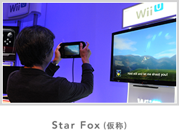
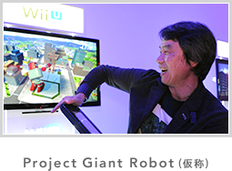
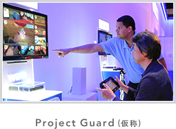

- 
-
テレビ画面には従来の『スターフォックス』シリーズのようにアーウィンを後方からみた景色が映され、全体の状況が分かります。
Wii U GamePadの画面には、フォックスが操作するアーウィンのコックピットからの眺めが映されます。GamePadのジャイロセンサーで照準を動かし、直感的に敵を狙うことができます。
戦闘機「アーウィン」や戦車「ランドマスター」などのマシンを切り替えることができ、シリーズ初のヘリコプター型マシンも登場します。
2015年発売予定です。
- 
-
GamePadのタッチスクリーンでパーツを選択して、巨大ロボットを組み立てます。
パーツはさまざまな物が用意され、サイズも自由に調整できます。ロボットが完成したら、敵の巨大ロボットと戦います。
GamePadのジャイロセンサーでロボットの上半身を動かし、左右のスティックで両腕を動かします。
相撲のように相手のロボットをひっくり返したほうが勝ちです。
プレイヤーは体全体を使ってロボットを操縦して遊びます。GamePadの画面にはコックピットからの景色が表示され、レーザーを発射することもできます。
2015年発売予定です。
- 
-
12台の監視カメラを使って、基地を侵略しようとせまってくるロボット達を撃退するゲームです。
テレビ画面には12台すべての監視カメラの映像が映し出されます。
プレイヤーはGamePadをタッチしてロボットが映っているカメラを選び、レーザービームを発射して撃退します。周りでテレビ画面を見ている人も、ロボットが映っているカメラを教えてあげることで、プレイヤーを手助けして一緒にゲームを楽しむことができます。
2015年発売予定です。